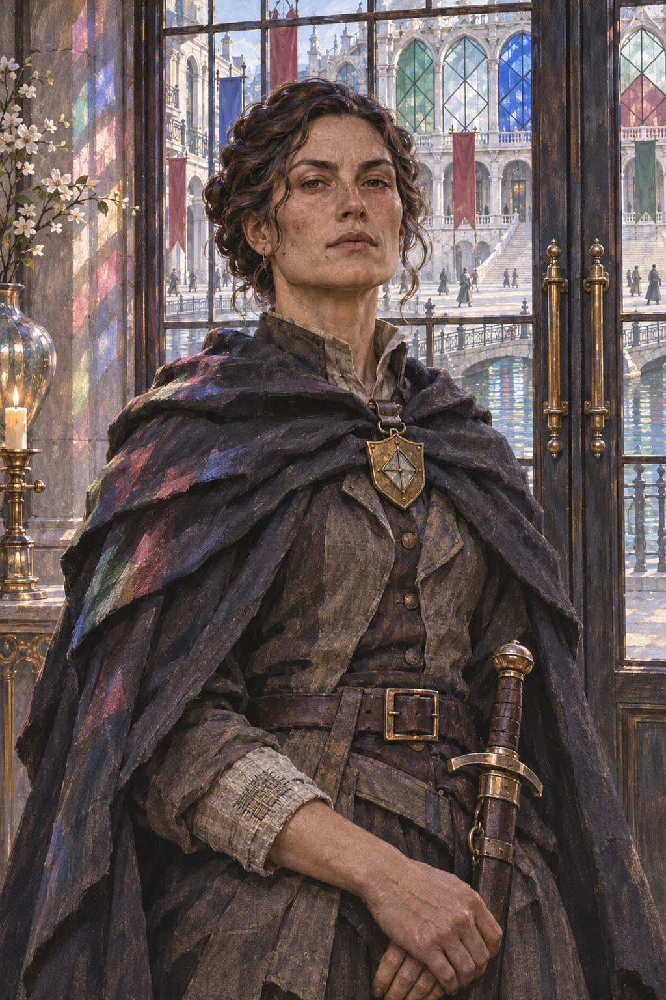
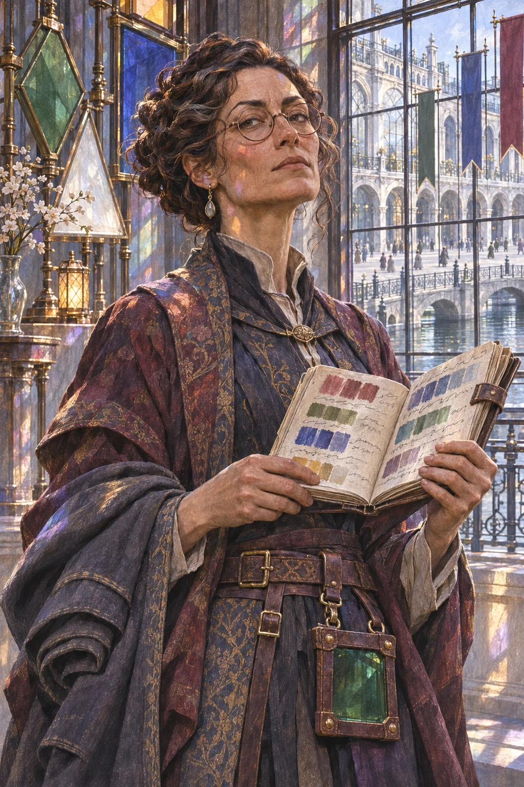
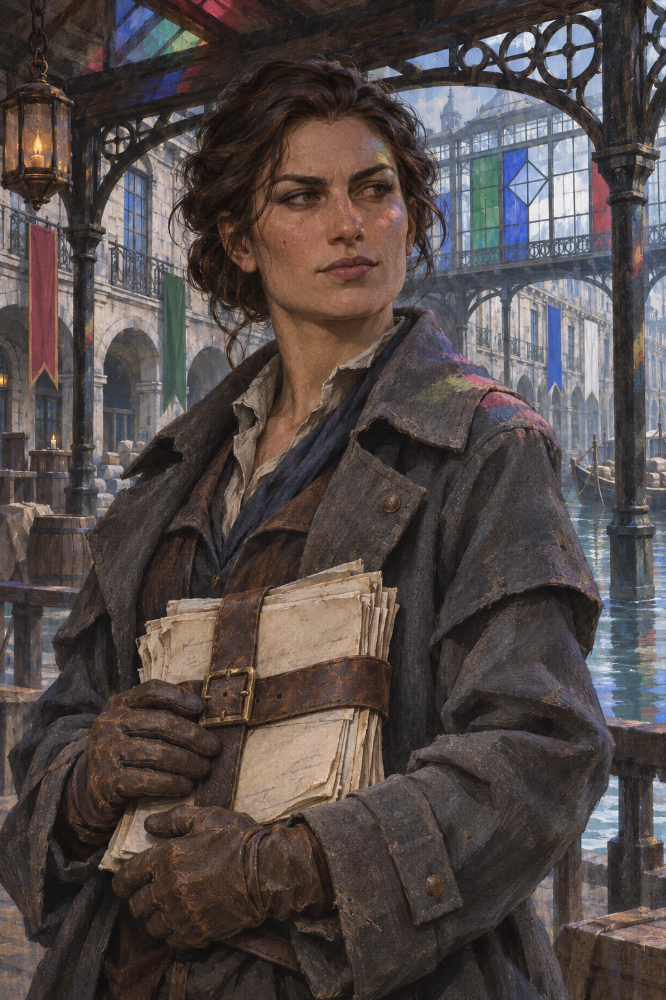
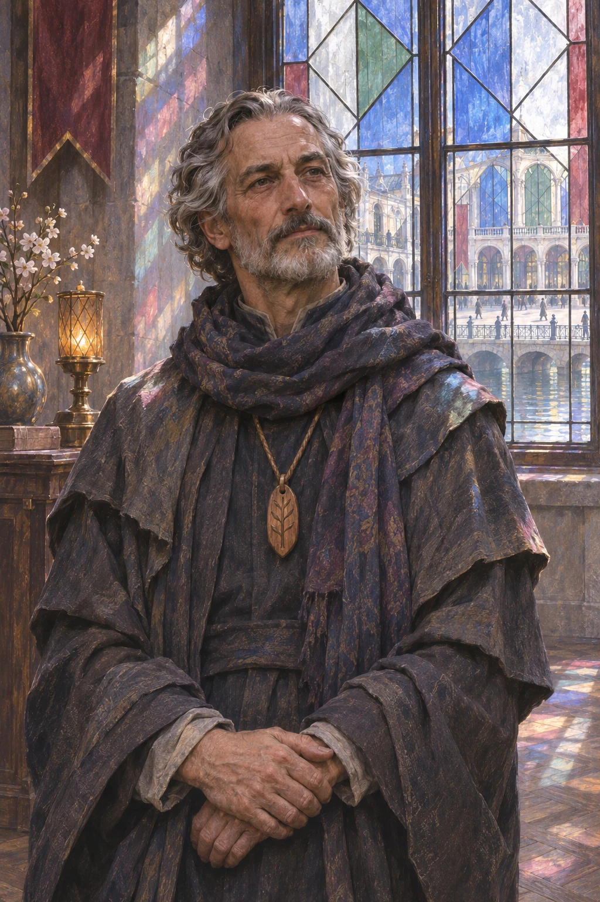
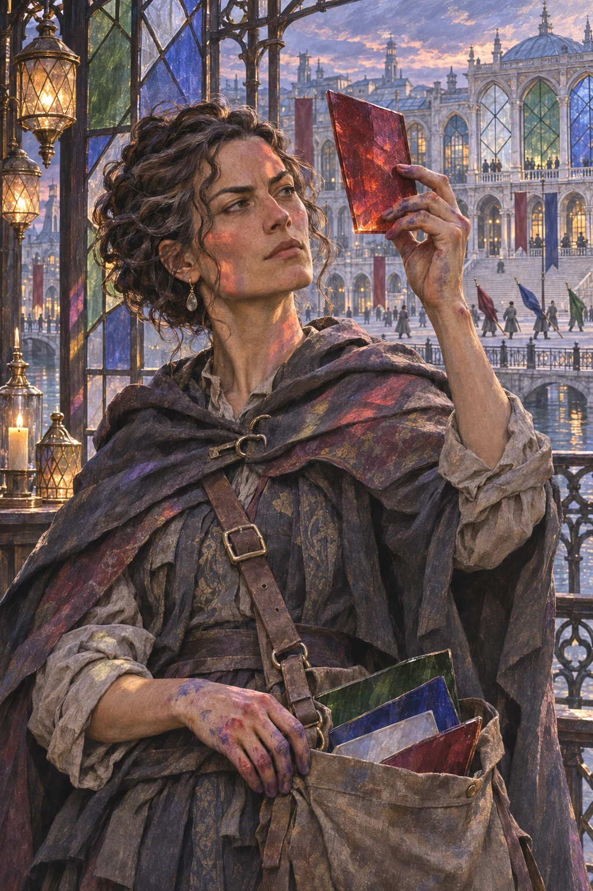

Мир и начало
Витраж — небольшая городская республика с окрестными дорогами и полками, возвращающимися после войны. Столица живёт за стеклом: двойные окна чайных, сигнальные рамы Галереи возвращения над площадью, цветные стёкла, которыми дома дают слово. Белая нить пишет шифровки цветными чернилами: строку видно только сквозь стекло того же цвета. Это вымысел мира, а не техника; стёкла не читают мысли и не управляют людьми. По обычаю обхода за семь дней до Возвращения знамён правительство назначает обходную группу из людей вне кабинета и полков: она обходит шесть домов города, каждую ночь недели проверяет двери Палаты, а на рассвете после ночи знамён читает с балкона, кому полки отдают знамёна, — обычно имя канцлера. Кого прочтут, тому знамёна; чтение не повторяют. Оружие — клинки, копья и арбалеты; огнестрельного оружия в Витраже нет. Герои — воины, плуты, жрецы или волшебники 3-го уровня; особых правил слежки, переворота или командования армией нет. Все люди мира, включая неназванных служителей, солдат и горожан, взрослые 21+.
Витраж — небольшая городская республика у канала, и столица её живёт за стеклом. В чайных ставят двойные окна, чтобы музыка с площади звучала мягче, над площадью высится Галерея возвращения с сигнальными рамами, а дома города дают слово не печатью и не клятвой, а цветным стеклом: прозрачным, зелёным, медным, синим. Белая нить, правительственная служба сведений, пишет свои распоряжения цветными чернилами, и строку видно только сквозь стекло того же цвета; на улицах шутят, что в Витраже правду читают на просвет. Война кончилась, и через неделю последние полки войдут в город на Возвращение знамён. Площадь каждый день репетирует праздник: знаменосцы выносят древки на пустой помост, Галерея пробует огни, лестницу Палаты отмывают до белизны. По старому обычаю за семь дней до праздника правительство назначает обходную группу — людей, которые не служат ни в кабинете, ни в полках. Группа обходит шесть домов города: армию, Белую нить, Палату, резерв, причалы и «Третью дверь». Дом, принявший её, отдаёт ей своё стекло — слово, что выйдет на праздник. Каждую ночь недели группа проверяет двери Палаты, а на рассвете после ночи знамён читает с балкона, кому полки отдают знамёна. Обычно читают имя канцлера. Кого прочтут, тому знамёна, и чтение не повторяют. В этом году обходная группа — вы. Ваш куратор — Кассия Аммер, глава Белой нити. Вчера её курьер принёс вам приказ на ночной обход, а сегодня утром она назначила вам встречу в чайной «Два стекла», у окна на площадь.

34 лет · воин · уровень 3
Таисия Ланге
Бывшая караульная Палаты; знает её двери, служителей и то, как вносят грузы
Хиты 31 · КД 11 · Скорость 30 футов
СИЛ 16 · ЛОВ 12 · ТЕЛ 16 · ИНТ 10 · МДР 12 · ХАР 10
Длинный меч, ручной топор.
Ровная осанка, тёмный плащ, аккуратно заштопанная манжета; под воротом — старая латунная бляха караула Палаты со стеклянной вставкой.
Ты ушла из караула Палаты после приказа закрыть двери перед просителями; никто не объяснил, что с ними стало. Служители и представительница Палаты Юла Нер до сих пор пускают тебя без пропуска. Кассия Аммер из Белой нити позвала тебя в обходную группу на неделю Возвращения знамён.
Связь
Надир однажды сменил твой уставший караул и сам принял за это выговор.
В центре внимания
Говорить с караулом и служителями Палаты; знать, что и как вносят в её двери; выводить людей, а не запирать их, и стоять у двери, когда за ней кто-то есть.
Личный вопрос
Когда караул превращается в замок?

29 лет · плут · уровень 3
Илан Корвин
Курьер частных поручений; свой человек в Доме складок и у людей «Третьей двери»
Хиты 24 · КД 13 · Скорость 30 футов
СИЛ 10 · ЛОВ 16 · ТЕЛ 14 · ИНТ 14 · МДР 12 · ХАР 12
Рапира, короткий лук.
Сумка с цветными карманами, лёгкая трость, внимательный взгляд; на шнурке — медный жетон Дома складок с номером.
Ростислав Пелль, связной Белой нити, учил тебя возвращать письма тем, кто боится их получать; ты знаешь его как осторожного коллегу, а не как героя. В Доме складок тебе выдают почту по жетону, а люди Иветты Сомм пускают тебя к себе. Кассия Аммер позвала тебя в обходную группу.
Связь
Зарина однажды заплатила за твою ошибочную доставку и ничего не попросила взамен.
В центре внимания
Находить тех, кто не хочет, чтобы его нашли; получать и передавать письма; говорить с людьми «Третьей двери» и конторщиками; решать, какое обещание передать дословно.
Личный вопрос
Чьё письмо ты не отнесёшь, даже за плату?

46 лет · жрец · уровень 3
Ефрем Вайда
Лекарь служебного квартала; лечил добровольцев резерва и знаменосцев полков
Хиты 24 · КД 11 · Скорость 30 футов
СИЛ 12 · ЛОВ 12 · ТЕЛ 14 · ИНТ 10 · МДР 16 · ХАР 14
Посох. Заклинания: «Лечащее слово», «Обнаружение магии».
Потёртая медицинская сумка, закатанные рукава; на цепочке — медный знак обета помощи.
Ты лечил людей с обеих сторон прежних столкновений; добровольцы резерва Энны Рей знают тебя в лицо и слушают. Начальники привыкли принимать твоё молчание за поддержку, а ты больше не хочешь молчать. Кассия Аммер позвала тебя в обходную группу.
Связь
Таисия однажды донесла твою сумку в переполненный лазарет и ничего не спросила взамен.
В центре внимания
Ставить на ноги упавших, своих и чужих (Целительное слово); говорить с резервом от имени того, кто его лечил; спрашивать, против кого и ради кого дом даёт своё слово.
Личный вопрос
Кого ты лечишь первым, если раненые с обеих сторон?

39 лет · волшебник · уровень 3
Тера Квин
Толковательница сигнальных рам Галереи возвращения; читает второе стекло обходной группы
Хиты 20 · КД 12 · Скорость 30 футов
СИЛ 8 · ЛОВ 14 · ТЕЛ 14 · ИНТ 16 · МДР 12 · ХАР 12
Посох. Заклинания: «Обнаружение магии», «Туманный шаг».
Очки в медной оправе, свёрнутый плащ, блокнот цветовых пометок; у пояса в кожаной рамке — зелёная пластина второго стекла.
Ты раньше служила Белой нити по найму, а теперь толкуешь сигналы Галереи и знаешь: свет подтверждает, что сообщение прозвучало, а не что оно законно. Вчерашний лист обходной группы — с тремя строками под вторым стеклом — у тебя в руках. Кассия Аммер позвала тебя в обходную группу.
Связь
Ефрем помог тебе подняться после переутомления и не советовал бросить ремесло.
В центре внимания
Читать то, что написано цветными чернилами, и говорить вслух, что видишь; сравнивать почерки и бумаги; работать у сигнальных рам Галереи; Туманным шагом оказываться у нужного стекла.
Личный вопрос
Где кончается процедура и начинается твоё слово?

42 лет · воин · уровень 3
Надир Ро
Отставной служебный пристав; в войну — пристав роты капитана Богдана Ольшева
Хиты 31 · КД 11 · Скорость 30 футов
СИЛ 16 · ЛОВ 12 · ТЕЛ 16 · ИНТ 10 · МДР 12 · ХАР 10
Длинный меч, ручной топор.
Серый камзол без прежних знаков, короткие волосы, привычка отступать от дверей; в кармане — деревянная полевая бирка роты со своим именем.
Ты исполнял законные распоряжения, последствия которых теперь считаешь несправедливыми. Знаменосцы Богдана помнят тебя по роте, и во Знамённом дворе с тобой говорят как со своим. Кассия Аммер позвала тебя в обходную группу.
Связь
Тера однажды прочла ошибочную запись о твоём увольнении и не стала обещать, что должность вернут.
В центре внимания
Говорить с солдатами, знаменосцами и штабом на их языке; читать приказ до конца и показывать отказ делом; держать дверь, когда за ней люди.
Личный вопрос
Какой подлинный приказ ты не исполнишь?

27 лет · плут · уровень 3
Зарина Мойл
Представительница закупщиков Медной пристани; ведёт квитанции носильщиков и лодочников
Хиты 24 · КД 13 · Скорость 30 футов
СИЛ 10 · ЛОВ 16 · ТЕЛ 14 · ИНТ 14 · МДР 12 · ХАР 12
Рапира, короткий лук.
Простое пальто, тяжёлые перчатки, пачка квитанций причалов под кожаным ремешком.
Причальные товарищества доверили тебе свои подряды и плату, и старшая причалов Гелена Шир слушает тебя до конца. Ты не обязана поддерживать ни кабинет, ни его противников. Кассия Аммер позвала тебя в обходную группу.
Связь
Илан всегда спрашивал, можно ли назвать твоё имя, прежде чем на него сослаться.
В центре внимания
Добиваться платы и сверять бумаги по квитанциям; говорить с Геленой и собранием под навесом; считать, во что союз обойдётся людям с пристани.
Личный вопрос
Как не обменять чужую свободу на место за столом?

52 лет · жрец · уровень 3
Матиас Оберт
Хранитель обетов, свидетель сделок домов; дополнительное место
Хиты 24 · КД 11 · Скорость 30 футов
СИЛ 12 · ЛОВ 12 · ТЕЛ 14 · ИНТ 10 · МДР 16 · ХАР 14
Посох. Заклинания: «Лечащее слово», «Обнаружение магии».
Спокойные движения, тёмный шарф, деревянная подвеска без казённой печати.
Ты ведёшь добровольные обеты взрослых и умеешь отличить обещание от красивой формулы. Дома отдают обходной группе стёкла под слово, и тебя позвали слышать, что именно обещано.
Связь
Ефрем однажды вслух признал твоё право не освящать служебную церемонию.
В центре внимания
Свидетельствовать сделки домов: обещание, данное дому при тебе, засчитывается +1 сразу; уточнять условия вслух; держать место, когда пары разошлись.
Личный вопрос
Какое обещание ты откажешься засвидетельствовать, пока не увидишь первого поступка?

31 лет · волшебник · уровень 3
Ора Милл
Мастерица света праздника; знает рамы Галереи и балкон Палаты; дополнительное место
Хиты 20 · КД 12 · Скорость 30 футов
СИЛ 8 · ЛОВ 14 · ТЕЛ 14 · ИНТ 16 · МДР 12 · ХАР 12
Посох. Заклинания: «Обнаружение магии», «Туманный шаг».
Следы красителей на пальцах, рабочий плащ; в сумке — цветные стёкла для праздничных огней, без янтаря.
Тебя наняли ставить огни Возвращения знамён на Галерее и у балкона Палаты. Ты можешь уйти с заказа, но хочешь понять, какую историю со сцены собираются рассказать городу.
Связь
Зарина добилась, чтобы твоим помощникам заплатили до начала репетиций.
В центре внимания
Работать с сигнальными рамами Галереи — там ты стоишь столько же, сколько Тера; знать, где и когда зажигают свет праздника и кто выходит на балкон.
Личный вопрос
Когда красивое представление становится твоим соучастием?